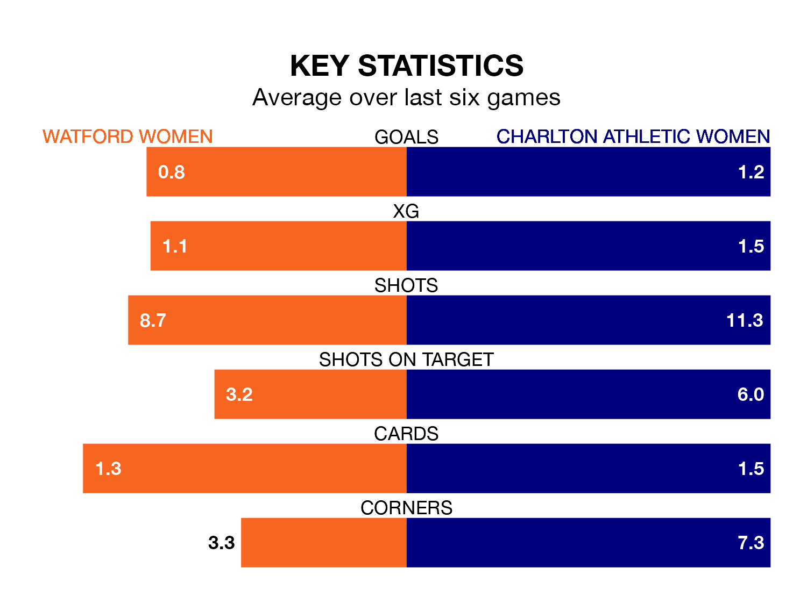

Relegation candidates Watford Women face a challenge against high-flying Charlton Athletic Women at Grosvenor Vale on Sunday.
Watford Women are rooted to the bottom of the FA Women's Championship table, and have picked up three wins and three draws in their 19 games to date.
Charlton Athletic, meanwhile, are fourth in the standings with 36 points, having won 10 and drawn six, and are four points behind table-toppers Sunderland Women.
With 19 goals in 19 games so far this season, Watford are the league's second-lowest scorers with 1.0 goals per game. And they are conceding more than average, letting in 39 goals at a rate of 2.1 per game.
Charlton Athletic, meanwhile, are average scorers, with 1.4 goals per game. They have conceded 0.9 goals per game.
The hosts are in disappointing form in the FA Women's Championship, with two wins and four losses from their last six games.
With three wins and a draw over that period, the away team's form is better – they have taken 10 points from 18, compared to Watford's six.
In Carly Johns, Watford have one of the league's most on-form strikers so far this season. She has notched seven goals in 19 appearances, to sit sixth in the scoring charts.
Her goal rate of one every 219 minutes is slightly quicker than that of Kayleigh Green, Charlton Athletic's top scorer with a goal every 223 minutes, and a total of six goals in 18 games.
In the last five years, Watford and Charlton Athletic have played each other on four occasions. Watford won one of them and Charlton Athletic the other.
On average, Watford scored 0.8 goals and Charlton Athletic 3.5 in those matches.
Their last meeting was on September 10, when Watford won 3-2 away.
Watford's last match was on March 31, a 3-0 loss against Sunderland Women.
Charlton Athletic beat Birmingham City Women 3-1 last time out, also on March 31, with Freda Ayisi, Karin Muya and Kate Longhurst on the scoresheet.
Updated: 11:20 (UTC), 09/04/24